Laporan Praktikum 7: MVC Laravel
Pendahuluan
Praktikum ini diselenggarakan untuk membekali mahasiswa dengan kompetensi fundamental dalam pengembangan aplikasi web dinamis berbasis kerangka kerja PHP, dengan fokus utama pada implementasi arsitektur Model-View-Controller (MVC) melalui framework Laravel. Melalui modul ini, mahasiswa diarahkan untuk memahami alur kerja Laravel yang terstruktur guna mengelola rute aplikasi, operasi basis data, dan antarmuka pengguna secara efisien. Secara spesifik, praktikum ini bertujuan agar mahasiswa mampu mengelola skema basis data melalui fitur Migration dan Seeding, mengonfigurasi Routing sebagai gerbang utama aplikasi, serta mengoptimalkan peran Controller sebagai mediator logika antara Model dan tampilan. Selain itu, penggunaan Blade Template Engine ditekankan untuk membangun antarmuka yang konsisten, sehingga pada akhirnya mahasiswa dapat mengimplementasikan fungsionalitas CRUD yang sistematis dan memenuhi standar pengembangan aplikasi modern.
Repository GithubLangkah Kerja
Buka file .env pada direktori root proyek Laravel, kemudian sesuaikan parameter database sebagai berikut:
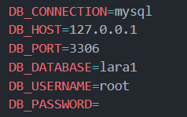
File migration akan berada di folder database/migrations,
untuk membuat file migration baru gunakan perintah
php artisan make:migration create_products_table.
Setelah file migration berhasil dibuat, buka file tersebut
lalu tambahkan kode berikut pada method up() untuk membuat
tabel products dengan field id, name, description, price,
created_at dan updated_at.
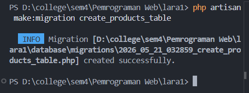
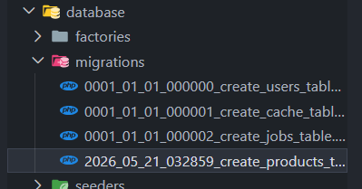
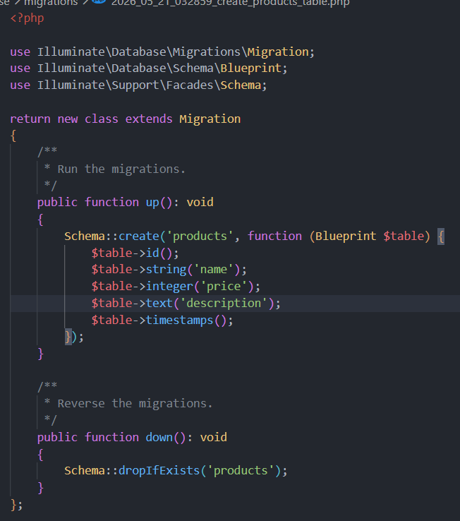
Execute migration menggunakan perintah
php artisan migrate
, setelah dijalankan perintah tersebut maka secara otomatis
tabel products akan terbentuk.
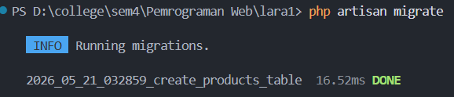
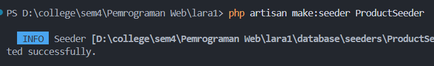
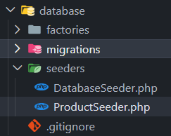
Setelah file seeder berhasil dibuat, buka file tersebut lalu tambahkan kode berikut.
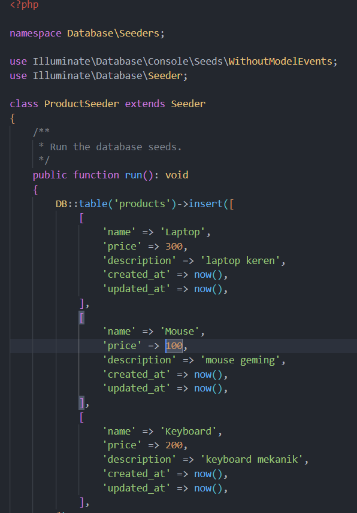
Tambahkan kode berikut pada file DatabaseSeeder.php untuk
menjalankan seeder.
$this->call(ProductSeeder::class);
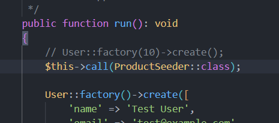
Jalankan seeder menggunakan perintah
php artisan db:seed
, setelah dijalankan perintah tersebut maka secara otomatis
data akan terisi pada tabel products.
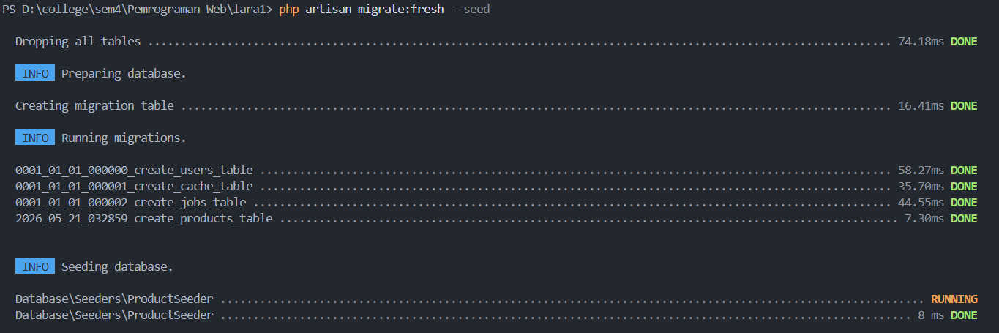
Controller bertindak sebagai pengelola logika utama yang
menjembatani permintaan pengguna, pengolahan data melalui
Model, hingga pengiriman hasil ke View, di mana fungsionalitas
standarnya seperti menampilkan, memperbarui, dan menghapus
data dapat dibuat secara instan melalui perintah CLI php
artisan make:controller NamaController --resource. Di sisi
lain, antarmuka pengguna dikelola secara efisien menggunakan
Blade Template Engine yang mendukung pembuatan kerangka
halaman dinamis melalui fitur penataan letak (layouting),
sehingga struktur kode tampilan menjadi lebih modular dan
terorganisir tanpa perlu pengulangan kode yang redundan.
Dengan demikian, implementasi MVC di Laravel tidak hanya
memisahkan tanggung jawab antara data, logika bisnis, dan
tampilan, tetapi juga meningkatkan produktivitas pengembangan
aplikasi web yang kompleks dengan cara yang terstruktur dan
mudah dipelihara.
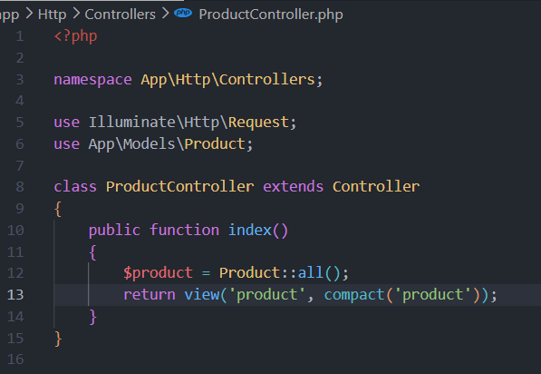
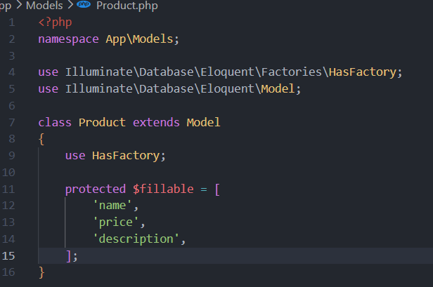
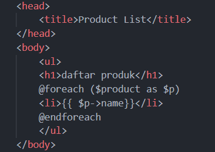
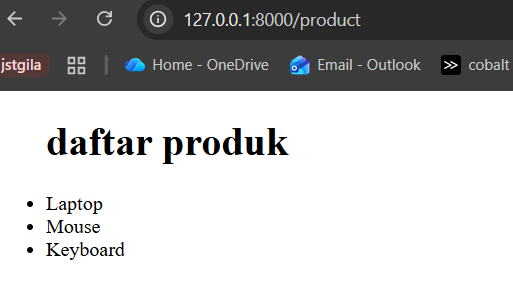